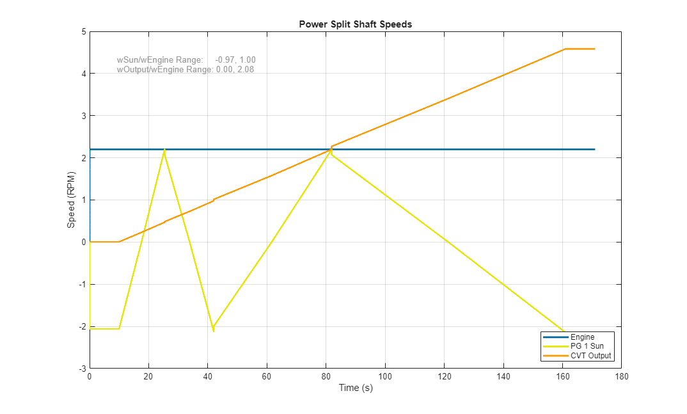

Power Split CVT with Four Speed Ranges

This example models a power split continuously variable transmission (CVT) with four planetary gears and five clutches.
Two power sources turn mechanical shafts attached to the sun and ring gear of the first planetary gear. The output shaft is attached to the carrier of the fourth planetary gear. The output speed of the gearset is affected by the two input speeds, the gear ratios of the four planetary gears, and the clutches between the third and fourth planetary gear. Any gear ratio can be achieved between the ring gear and the carrier (including 0) by varying the speed of the sun gear.
The clutches enable a wider range of ratios (or output speeds) to be achieved for a narrower range of sun shaft input speed. Progressively higher output/input ratios are achieved by changing the states of the clutches.
(return to Wheel Loader Design with Simscape Overview)
Contents
Model
Planetary Gear 1 Subsystem
The planetary gear is modeled using common gear constraints.
Simulation Results: Full Speed Range Test
This test keeps the speed of the ring shaft constant while the speed of the sun gear is varied. This is the situation for a CVT used with an engine that is kept running at a speed close to its maximum efficiency, and must always spin to power other implements, such as hydraulic pumps or generators that drive other implements on the vehicle. The vehicle, however, may come to rest while the engine is running.
The sun gear speed is varied to show that different vehicle speeds can be achieved even while the engine is spinning at a near constant speed. The use of additional planetary gears and clutches enables a wide range of output/input ratios for a smaller range of sun shaft speeds.
The key challenge in the design is that at the moments the clutches change state, the CVT output/input ratio must be the same. This requires careful selection of planetary gear ratios, sun/engine speed ratios, and speed at which to change the clutches. To see how to tune CVT design parameters to meet the design criteria, see Optimizing Power-Split CVT Design Parameters
Elapsed Sim Time = 20.5893

Animation of results
The results of the simulation can be animated using MATLAB graphics